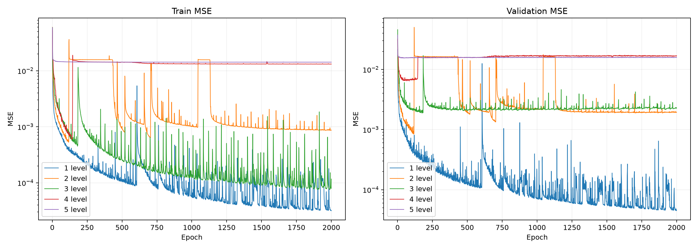
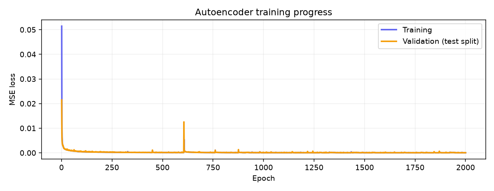
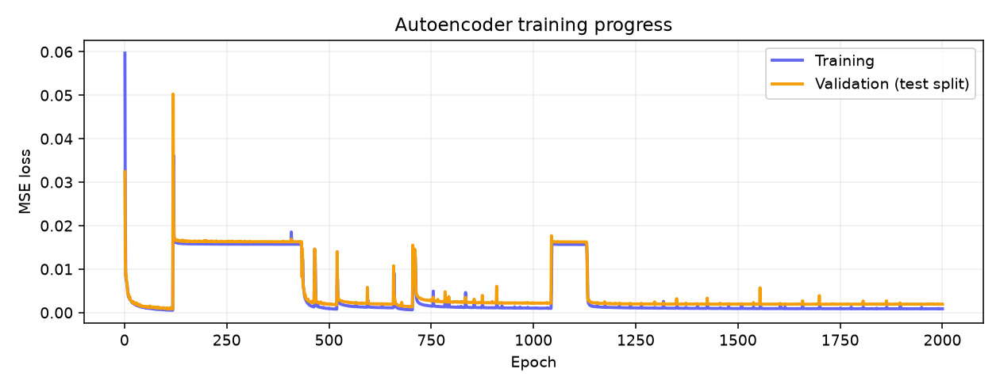
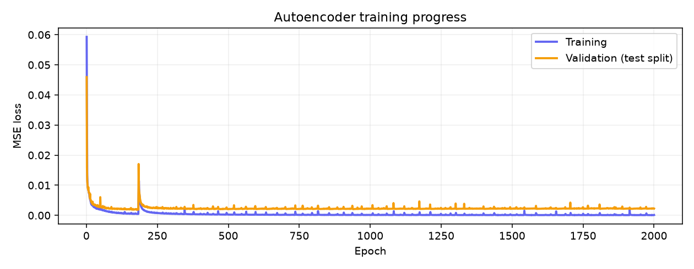
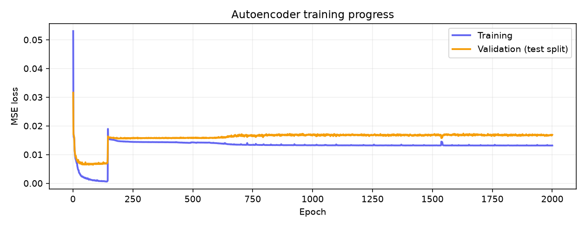
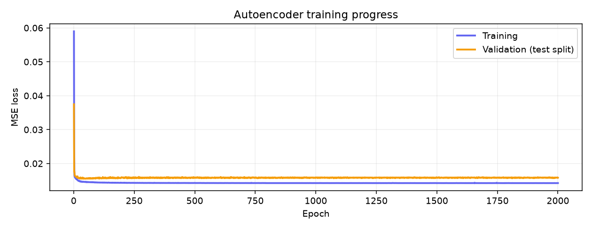

1–5 层 autoencoder · 全部从随机初始化训练 · 完整训练结果
最佳权重按验证 MSE 选取；最终权重为第2000轮。MSE 越低越好。

纵轴使用对数尺度。点击图片可查看大图。
结合训练曲线与重建视频的实验观察。
损失进入平台不代表重建质量好；单次运行也不足以区分初始化、训练动态与模型结构各自的影响。
重建展示使用最终权重，包含两个样本及误差画面。每层独占一行，上方为训练曲线，下方为重建视频；向下浏览时按需加载，也可在新页面放大查看。
最终验证 MSE 0.00004557

最终验证 MSE 0.00193984

最终验证 MSE 0.00226623

最终验证 MSE 0.01688267

最终验证 MSE 0.01581024
